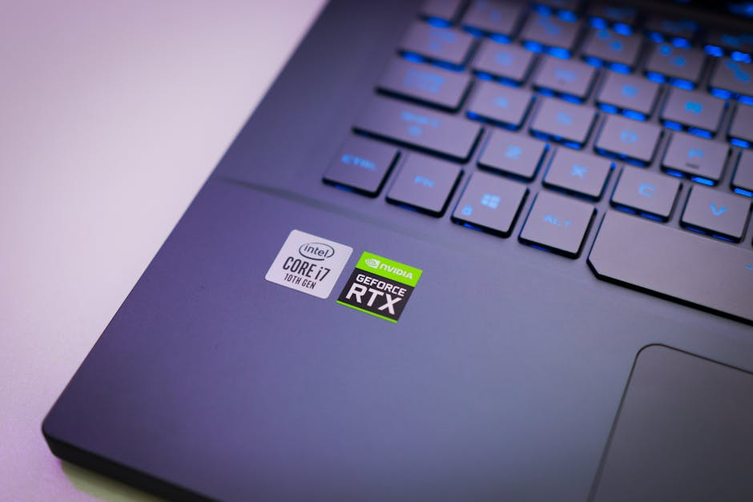
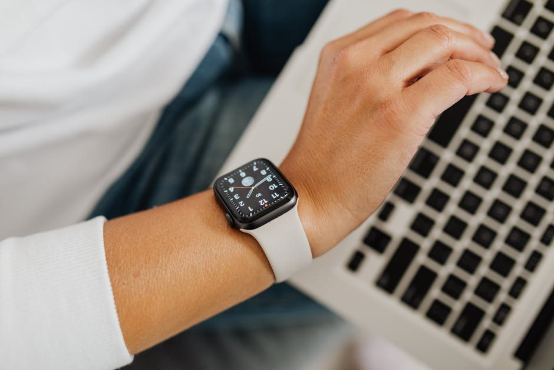

Scegli con Sicurezza: La Tua Guida Indipendente all'Innovazione
Esplora le nostre analisi dettagliate per trovare il dispositivo perfetto per te. Dalle ultime uscite sul mercato fino alle soluzioni più convenienti, analizziamo tutto con rigore.
Cosa Analizziamo per Te
Approfondimenti editoriali completi per orientarti nel vasto panorama tecnologico odierno.

Recensioni Smartphone
Il mercato dei dispositivi mobili evolve rapidamente. Le nostre recensioni smartphone ti offrono uno sguardo critico su autonomia, qualità fotografica, prestazioni del processore e fluidità del software. Non ci limitiamo a leggere le schede tecniche, ma testiamo i dispositivi nell'uso quotidiano reale per capire se valgono il tuo investimento.
- Test intensivi della batteria
- Analisi della qualità fotografica

Confronto Laptop e PC
Scegliere il computer giusto per lavoro, studio o gaming può essere complesso. Il nostro confronto laptop mette fianco a fianco le migliori opzioni sul mercato. Analizziamo la dissipazione del calore, la qualità del display e l'ergonomia della tastiera per aiutarti a trovare la macchina perfetta per le tue esigenze specifiche.
- Benchmark delle prestazioni reali
- Valutazione del rapporto qualità-prezzo

Test Prodotti Tech e Wearables
L'ecosistema tecnologico va ben oltre gli schermi principali. Ci dedichiamo con passione ai test prodotti tech emergenti, analizzando gadget nuovi come smartwatch, auricolari wireless e dispositivi per la smart home. Scopriamo insieme quali innovazioni migliorano davvero la vita quotidiana e quali sono solo mode passeggere.
- Analisi dell'ecosistema e compatibilità
- Prove di usabilità a lungo termine
La Nostra Missione Editoriale
LoxicTech nasce come portale informativo dedicato a chi vive e respira tecnologia. In un mondo in cui escono continuamente gadget nuovi, la nostra missione è filtrare il rumore di fondo fornendoti valutazioni chiare, oggettive e basate sull'esperienza diretta.
Curiamo ogni articolo, dal semplice confronto laptop alle più complesse recensioni smartphone, pensando al consumatore finale. Vogliamo che tu abbia tutte le informazioni necessarie per fare scelte consapevoli nell'acquisto dei tuoi prossimi dispositivi, comprendendo pregi e difetti di ogni prodotto prima di aprire il portafoglio.
Contatta la redazione
Domande Frequenti
Risposte chiare sul nostro metodo di lavoro e valutazione.
Come strutturate le recensioni smartphone?
Ogni dispositivo viene utilizzato come telefono principale per almeno due settimane. Valutiamo attentamente la ricezione del segnale, l'autonomia reale fuori casa, la fluidità del sistema operativo e la qualità delle fotocamere in diverse condizioni di luce, per offrire un giudizio completo e onesto.
Con quale frequenza aggiornate il confronto laptop?
Le nostre guide all'acquisto e i confronti vengono revisionati mensilmente o in concomitanza con l'annuncio di nuove architetture hardware (nuovi processori o schede video). Questo ci permette di garantirti raccomandazioni sempre attuali e pertinenti rispetto al mercato.
Provate fisicamente tutti i gadget nuovi di cui parlate?
Sì, pubblichiamo recensioni complete solo per i prodotti che abbiamo avuto modo di testare fisicamente nei nostri studi. Quando pubblichiamo notizie su annunci di prodotti non ancora disponibili, lo specifichiamo chiaramente definendo l'articolo come "anteprima" o "news", separandolo dai test prodotti tech veri e propri.
Come scegliete quali test prodotti tech pubblicare?
Selezioniamo i prodotti basandoci sull'interesse della community, sulle innovazioni tecnologiche introdotte e sulla rilevanza per il mercato italiano. Diamo priorità a dispositivi che portano novità significative o che si propongono come best-buy nella loro fascia di prezzo.
Le vostre opinioni sono indipendenti?
Assolutamente sì. Le nostre valutazioni sono il frutto esclusivo delle prove sul campo effettuate dai nostri redattori. Non accettiamo compensi per alterare i giudizi. Il nostro obiettivo è informare i lettori, evidenziando in modo trasparente sia i punti di forza che le criticità di ogni dispositivo esaminato.
Cosa Dicono i Nostri Lettori
Opinioni di chi segue le nostre guide per i propri acquisti tech.
"Le loro recensioni smartphone sono le più dettagliate che ho trovato online. Mi hanno evitato di spendere 800 euro per un telefono che aveva problemi di surriscaldamento segnalati solo da loro."
— Marco R. (2026)
"Il confronto laptop per studenti è stato fondamentale. Ho trovato una macchina perfetta per l'università che non mi ha svuotato il conto in banca. Articoli sempre obiettivi e ben scritti."
— Elena C. (2026)
"Ottimi i test prodotti tech sui nuovi wearable. Grazie alle loro analisi ho capito quale smartwatch avesse i sensori più precisi per il monitoraggio sportivo prima di acquistarlo."
— Giovanni T. (2026)
Mettiti in Contatto
Hai suggerimenti per nuovi test o vuoi proporre un prodotto per una recensione? Inviaci un messaggio.
Redazione LoxicTech
Via dell'Innovazione, Milano (MI), Italia